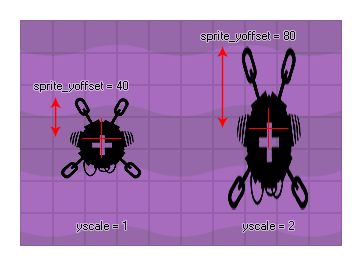

Diese schreibgeschützte Variable gibt das lokale yoffset (die y-Komponente des im Sprite-Editor definierten Ursprungs) des Sprites zurück, das der Instanz zugewiesen wurde. Dieser yoffset wird in Pixeln zurückgegeben und ist abhängig von image_yscale, so dass (zum Beispiel) wenn ein quadratisches 32x32-Sprite mit dem y-Ursprung bei 16 definiert ist, wenn dieses Sprite um 2 skaliert wird, diese Variable 32 zurückgibt. Wenn Sie den unskalierten yoffset benötigen, sollten Sie verwenden sprite_get_yoffset. 
Informationen zu den Sprites finden Sie hier.
sprite_yoffset;
Real
if y - sprite_yoffset < 0
{
y = sprite_yoffset;
}
Der obige Code überprüft, ob die Oberkante des Sprites der Instanz außerhalb des Raums liegt. Wenn dies der Fall ist, wird die Instanz so verschoben, dass das gesamte Sprite sichtbar ist.